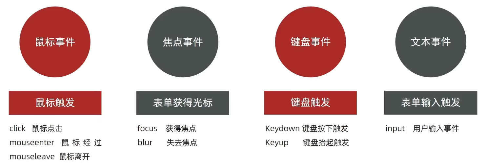

JavaScript --Web API
DOM
DOM，Document Object Model——文档对象模型是用来呈现以及与任意 HTML 或 XML文档交互的 API。
DOM对象：浏览器根据 html 标签生成的 JS对象。
获取DOM对象：
-
根据CSS选择器来获取DOM元素
- 选择匹配的第一个元素语法：
document.querySelector('css选择器')参数: 包含一个或多个有效的CSS选择器 字符串返回值：CSS选择器匹配的第一个元素,一个 HTMLElement对象。如果没有匹配到，则返回null。 - 选择匹配的多个元素语法：
document.querySelectorAll('css选择器')参数:包含一个或多个有效的CSS选择器 字符串返回值：CSS选择器匹配的NodeList 对象集合，得到的是一个有长度有索引号没有数组方法的伪数组，通过遍历（for）的方式获得里面的每一个对象。
- 选择匹配的第一个元素语法：
-
其他获取DOM元素方法（了解）
操作元素内容
-
元素
.innerText属性- 将文本内容添加/更新到任意标签位置
- 显示纯文本，不解析标签（比如下例中文字不会加粗）
-
元素
.innerHTML属性- 将文本内容添加/更新到任意标签位置
- 会解析标签，多标签建议使用模板字符（比如下例中文字会加粗）
1 | <body> |
操作元素属性
-
操作元素常用属性：
对象.属性 = 值 -
操作元素样式属性：
- 通过 style 属性操作CSS：
对象.style.样式属性 = 值 - 操作类名(className) 操作CSS：
元素.className = 'CSS类名'（用新名换旧名，如需保留旧名，把旧名也写在里面）1
2
3
4
5
6
7
8
9
10
11
12
13
14
15
16
17
18
19
20
21<head>
<style>
.nav {
color: red;
}
.box {
width: 300px;
height: 300px;
}
</style>
</head>
<body>
<div class="nav"></div>
<script>
// 1. 获取元素
const div = document.quertSelector('div')
// 2. 添加类名
div.className = 'nav box'
</script>
</body> - 通过 classList 操作类控制CSS：
1
2
3
4
5
6// 追加一个类
元素.classList.add('类名')
// 删除一个类
元素.classList.remove('类名')
// 切换一个类
元素.classList.toggle('类名')
- 通过 style 属性操作CSS：
-
操作表单元素属性：获取：
DOM对象.属性名，设置：DOM对象.属性名 = 新值
定时器-间歇函数
-
开启定时器
1
setInterval(函数, 间隔时间)
每隔一段时间调用这个函数，间隔时间单位是毫秒。
2. 关闭定时器
1
2let 变量名 = setInterval(函数, 间隔时间)
clearInterval(变量名)
事件
事件监听
1 | 元素对象.addEventListener('事件类型', 要执行的函数) |
程序检测是否有事件产生，一旦有事件触发，就立即调用一个函数做出响应，也称为绑定事件或者注册事件。

事件对象
事件对象记录事件触发时的相关信息，比如用户按下哪个键。事件绑定的回调函数的第一个参数就是事件对象，一般命名为 event、ev、e。
1 | 元素.addEventListener('click', function (e) { |
常用属性:
-
type获取当前的事件类型 -
clientX/clientY获取光标相对于浏览器可见窗口左上角的位置 -
offsetX/offsetY获取光标相对于当前DOM元素左上角的位置 -
key用户按下的键盘键的值（现在不提倡使用keyCode）
例如：
1 | <input type="text"> |
事件流
事件捕获
从DOM的根元素开始去执行对应的事件 (从外到里)
1 | DOM.addEventListener(事件类型, 事件处理函数, 是否使用捕获机制) |
addEventListener第三个参数默认为 false，代表冒泡阶段触发，传入 true 代表是捕获阶段触发（很少使用）
事件冒泡
当一个元素触发事件后，会依次向上调用所有父级元素的同名事件
1 | const father = document.querySelector('.father') |
点击son，依次输出：我是儿子 → 我是爸爸 → 我是爷爷使用 事件对象.stopPropagation() 可以阻止冒泡（例如在son的函数里添加，点击后只会输出“我是儿子”）
阻止默认行为
某些情况下需要阻止默认行为的发生，比如阻止链接的跳转。
1 | e.preventDefault() |
解绑事件
on事件方式：直接使用null覆盖就可以实现事件的解绑
1 | // 绑定事件 |
addEventListener方式：
1 | 事件对象.removeEventListener('事件类型', 事件处理函数, [获取捕获或者冒泡阶段]) |
鼠标经过事件：
mouseover 和 mouseout 会有冒泡效果
mouseenter 和 mouseleave 没有冒泡效果 (推荐)
1 | <body> |
事件委托
给父元素注册事件，触发子元素时会冒泡到父元素身上，从而触发父元素的事件。获得真正触发事件的元素： 事件对象.target.tagName
其他事件
页面加载事件：
1 | window.addEventListener('load', function () { |
页面滚动事件：
scrollLeft 和 scrollTop（属性）可以获取往左、往上滚去的距离
offsetLeft 和 offsetTop（只读属性）获取元素距离自己定位父级元素的左、上距离
1 | window.addEventListener('scroll', function () { |
日期对象
实例化
1 | // 当前时间 |
时间戳：指1970年01月01日00时00分00秒起至现在的毫秒数
1 | // 1.使用 getTime() 方法 |
本地存储
存储数据：localStorage.setItem(key, value)获取数据：localStorage.getItem(key)删除数据：localStorage.removeItem(key)
箭头函数
基本语法:
1 | // 普通函数 |
箭头函数没有 arguments 动态参数，但是有剩余参数 ...args。
1 | const getSum = (...args) => { |
箭头函数不会创建自己的this,它只会从自己的作用域链的上一层沿用this。
1 | console.log(this) // 此处为window |
遍历数组 forEach
1 | 被遍历的数组.forEach(function (当前数组元素，当前元素索引号(可选)){ |
筛选数组 filter
创建一个新的数组，新数组中的元素是通过检查指定数组中符合条件的所有元素。如果没有符合条件的元素则返回空数组。
1 | 被遍历的数组.filter(function (currentValue, index(可选)) { |